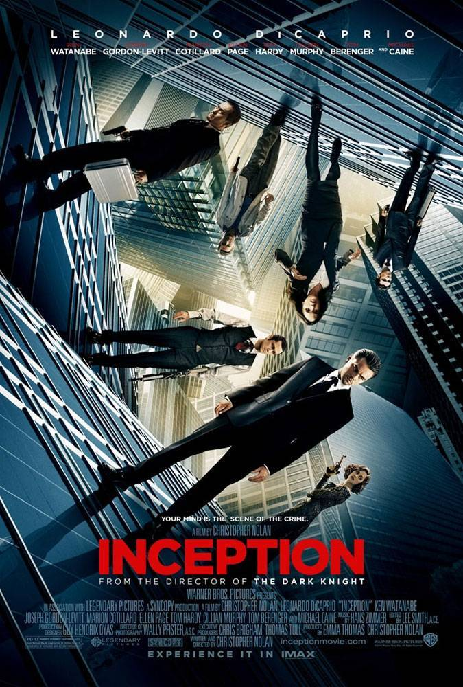
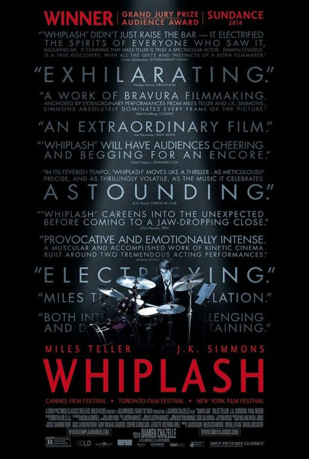
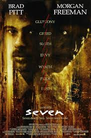
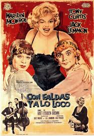

INCEPTION
A thief, who steals corporate secrets through use of dream-sharing technology, is given the inverse task of planting an idea into the mind of a CEO. Director: Christopher Nolan Writer: Christopher Nolan Stars: Leonardo DiCaprio, Joseph Gordon-Levitt, Ellen Page, Micheal Caine
WHIPLASH
A promising young drummer enrolls at a cut-throat music conservatory where his dreams of greatness are mentored by an instructor who will stop at nothing to realize a student's potential. Director: Damien Chazelle Writer: Damien Chazelle Stars: Miles Teller, J.K. Simmons, Melissa Benoist
SE7EN
Two detectives, a rookie and a veteran, hunt a serial killer who uses the seven deadly sins as his modus operandi. Director: David Fincher Writer: Andrew Kevin Walker Stars: Morgan Freeman, Brad Pitt, Kevin Spacey
SOME LIKE IT HOT
When two male musicians witness a mob hit, they flee the state in an all-female band disguised as women, but further complications set in. Director: Billy Wilder Writers: Billy Wilder (screenplay), I.A.L. Diamond (screenplay) Stars: Marilyn Monroe, Tony Curtis, Jack Lemmon